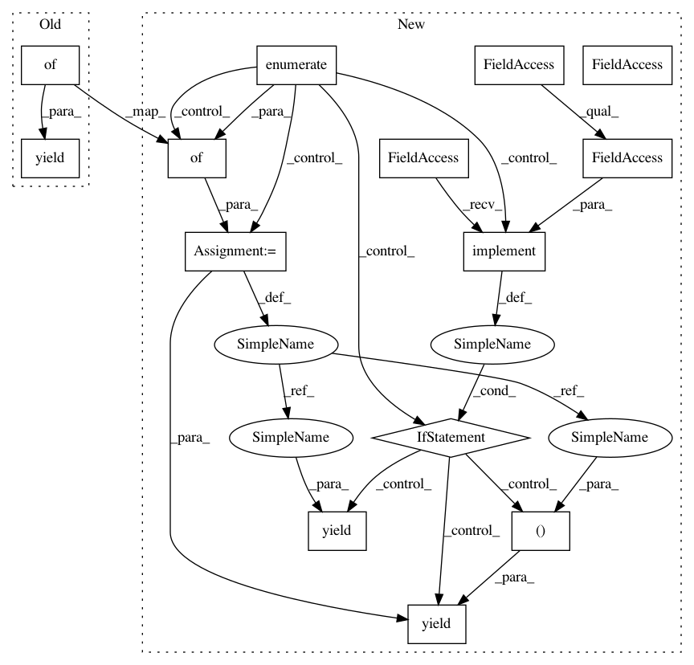

dde3dc3195209ac20ba7f104d8a36a052bb10dcb,tensorflow_datasets/structured/titanic.py,Titanic,_generate_examples,#Titanic#Any#,131
Before Change
raw_data = csv.DictReader(f)
for row in raw_data:
survive_val = row.pop("survived")
yield {
"survived": convert_to_label(survive_val, _SURVIVED_DICT),
"features": {
name: FEATURE_DICT[name][1](value)
for name, value in row.items()
}
}
After Change
with tf.io.gfile.GFile(file_path) as f:
raw_data = csv.DictReader(f)
for i, row in enumerate(raw_data):
survive_val = row.pop("survived")
record = {
"survived": convert_to_label(survive_val, _SURVIVED_DICT),
"features": {
name: FEATURE_DICT[name][1](value)
for name, value in row.items()
}
}
if self.version.implements(tfds.core.Experiment.S3):
yield i, record
else:
yield record
In pattern: SUPERPATTERN
Frequency: 3
Non-data size: 14
Instances
Project Name: tensorflow/datasets
Commit Name: dde3dc3195209ac20ba7f104d8a36a052bb10dcb
Time: 2019-08-07
Author: 31502077+ChanchalKumarMaji@users.noreply.github.com
File Name: tensorflow_datasets/structured/titanic.py
Class Name: Titanic
Method Name: _generate_examples
Project Name: tensorflow/datasets
Commit Name: b6f768a025394a37848b1a3448319bb622c89e0a
Time: 2019-06-12
Author: pierrot@google.com
File Name: tensorflow_datasets/image/mnist.py
Class Name: MNIST
Method Name: _generate_examples
Project Name: tensorflow/datasets
Commit Name: dde3dc3195209ac20ba7f104d8a36a052bb10dcb
Time: 2019-08-07
Author: 31502077+ChanchalKumarMaji@users.noreply.github.com
File Name: tensorflow_datasets/structured/iris.py
Class Name: Iris
Method Name: _generate_examples
Project Name: tensorflow/datasets
Commit Name: dde3dc3195209ac20ba7f104d8a36a052bb10dcb
Time: 2019-08-07
Author: 31502077+ChanchalKumarMaji@users.noreply.github.com
File Name: tensorflow_datasets/structured/titanic.py
Class Name: Titanic
Method Name: _generate_examples